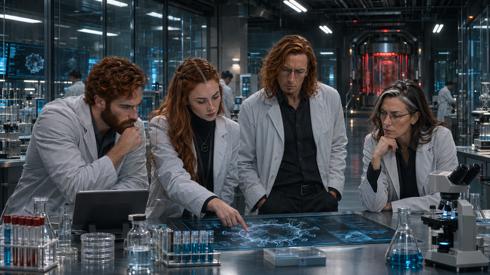

Programas científicos
Estudos e registros biológicos conduzidos em setores especializados.
Ver pesquisasEsta rede só pode ser acessada pelo terminal liberado após a verificação de credenciais.
Retornar ao terminal de acessoFundada por Laurence Maverick, a Dominium conecta programas científicos, complexos e equipes dedicadas à pesquisa e à contenção.

Maverick fundou a Dominium para reunir pesquisa, contenção e continuidade sob uma mesma estrutura. Sua atuação permanece ligada aos programas científicos da organização.
Conhecer a equipe.jpeg)
Estudos e registros biológicos conduzidos em setores especializados.
Ver pesquisasCentros de superfície e subterrâneos fazem parte da estrutura da Dominium.
Ver complexosPesquisadores e equipes operacionais atuam nos diferentes centros.
Ver equipeEm uma fase posterior, a organização passou a usar o nome DOMINUS como fachada.
DOMINIUM identifica a organização original. DOMINUS é o nome de fachada adotado depois. A data e os documentos completos da transição ainda não foram anexados a este arquivo.